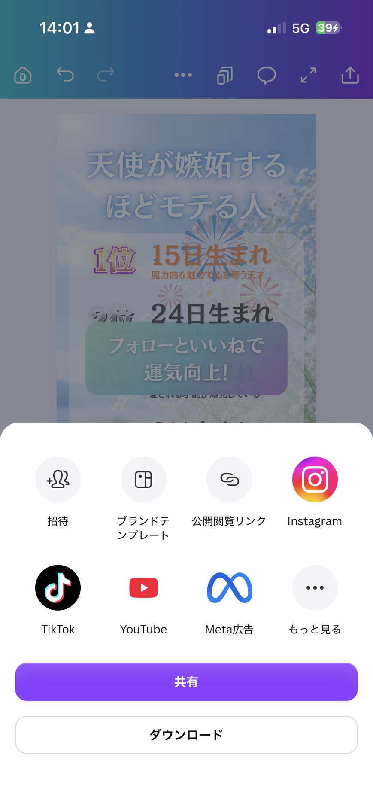

✦ どんな動画ができる？
「誕生日（◯日生まれ）」でTOP5を発表する、5ページ構成の縦型リール動画です。 1ページずつ順位が現れる“ローディング”演出はテンプレに設定済み。 あなたは文字を変えるだけでOK。
▲ 右が完成イメージ（実際に動く見本です）
▲ これが完成イメージ（実際に動く見本です）
テンプレを自分用にコピー
まずは下のボタンからテンプレートを開きます。開いたら 「テンプレートを使用」 （または右上の … →「コピーを作成」）を押して、 あなたのCanvaの中に複製しましょう。
🎨 テンプレートを開く⚠ ここ大事！
元のテンプレートに直接書き込まず、必ず「コピー」してから編集してください。 コピーを作れば、何度でも作り直せます。※Canvaのアカウントが必要です（無料でOK）。スマホアプリでもパソコンでも作れます。
AIで「鑑定文」を作る
動画に入れる「テーマ × TOP5の◯日生まれ × 一言鑑定」は、 AI（ChatGPT や Gemini）に作ってもらうと一瞬です。 下の呪文（プロンプト）をコピーして、AIに貼り付けるだけ。
あなたはバズるショート動画を作るプロの占い師です。 「誕生日（◯日生まれ）」で運勢をランキングする、インスタ用の縦型動画の原稿を作ってください。 【作ってほしいもの】 ・思わず見たくなるテーマを5つ ・各テーマごとに「1位〜5位」のランキング ・順位は「◯日生まれ」（1〜31日のどれか）で表す ・各順位に、15文字以内の前向きな一言鑑定をつける 【テーマの条件】 ・恋愛・モテ・金運・転機・才能 など、惹きのある切り口 ・「◯◯な人」と言い切る（例：別れてからモテ期が爆発する人） 【占いの根拠】 ・カバラ数秘術や数霊（誕生日の数字の意味）をベースに、それっぽく説得力を持たせる ・同じ「◯日生まれ」が別のテーマと重複してもOK 【出力フォーマット】※この形のまま出して ━━━━━━━━━━ ■テーマ1：（テーマ名） 1位 ◯日生まれ｜（一言鑑定） 2位 ◯日生まれ｜（一言鑑定） 3位 ◯日生まれ｜（一言鑑定） 4位 ◯日生まれ｜（一言鑑定） 5位 ◯日生まれ｜（一言鑑定） ━━━━━━━━━━ （テーマ2〜5も同じ形で）
↓ こんな感じで返ってきます（5テーマ分のうちの1つ）
■テーマ1：別れてからモテ期が爆発する人
1位 15日生まれ｜自由になり魅力が溢れ出す
2位 6日生まれ｜ありのままの優しさが惹く
3位 22日生まれ｜内に秘めた色気が開花する
4位 3日生まれ｜キラキラの感性で異性を惹く
5位 19日生まれ｜カリスマ性で注目の的に
💡 使い方のコツ
- 気に入らないテーマは「テーマ3だけ作り直して」と頼めばOK
- 一言鑑定が長いと枠からはみ出すので、15文字以内を目安に
- 出てきた5テーマ分を、次のSTEPで各ページに貼っていきます
※AIは無料版でOK。ChatGPT・Gemini・Copilot など、お使いのものでどうぞ。
文字をコピペで差し替える
ここがメイン作業！コピーしたテンプレを開いて、AIが作った原稿を コピペしていくだけです。
-
1
変えたい文字を ダブルクリック → 文字を全選択する
-
2
AIの原稿から該当部分を コピーして貼り付け（ペースト）。各ページで次の3か所を入れ替えます：
🏷 テーマ見出し（「◯◯な人」）
🎂 1位〜5位の「◯日生まれ」（数字を入れ替え）
💬 各順位の 一言鑑定
-
3
文字を選択すると上に ツールバー が出ます。フォント・サイズ・色はここで調整できます（基本はテンプレのままでキレイに収まります）。
⚠ はみ出し注意
一言鑑定が長いと枠からはみ出します。15文字以内を目安に。 ページの複製は不要です（テンプレは最初から5ページあります）。背景を変更する
背景を自分好みに変えたいときの手順です（変えなくてもOK）。 ここは順番がだいじ。下の手順を見ながら、 画面のスクショと合わせて進めてね👇
-
1
背景にしたい画像を選んで画面に表示させたら、「・・・」をタップ
-
2
「画像を背景として設定」をタップ
-
3
鉛筆マークの編集ボタンを押して、編集画面を開く
⚠ ここを忘れないで！
元の背景を削除：いらなくなった元の背景を選んで ゴミ箱マーク で消す
秒数を調整：背景を変えると尺がズレるので、各ページの秒数を合わせる
📐 1・5ページ目＝4秒 ／ 2・3・4ページ目＝3.5秒
📱 実際の画面（スワイプで順番に見れます）

① 背景にしたい画像を表示させて「・・・」をタップ

② 「画像を背景として設定」をタップ
※背景は5ページ分それぞれに設定します。同じ背景でいい場合は、1ページ作ってからページごとコピーすると早いです。
誘導バナー＆アニメはそのまま
🙌 基本さわらなくてOK
動画の途中に出る「フォロー＆いいねで運気UP」などの誘導バナーと、 順位が1つずつ出る“ローディング”アニメは、テンプレに設定済みです。📝 文言を変えたいときだけ、バナーをダブルクリックして編集。
🎬 アニメを確認したいときは、文字を選択 → 上の「アニメーション」で設定が見られます（変えなくてOK）。
MP4でダウンロード
仕上がったら動画として書き出します。
- 1
右上の 「共有」 をタップ
- 2
出てきた画面の下の 「ダウンロード」 を選択
- 3
ファイルの種類＝ 「MP4形式の動画」
- 4
画質＝ 「1080p HD」 がおすすめ
- 5
ページ＝ 「すべてのページ（1〜5）」
- 6
ダウンロードボタンを押す

完成です！🎉
お疲れさまでした。あとはインスタに投稿するだけ✨